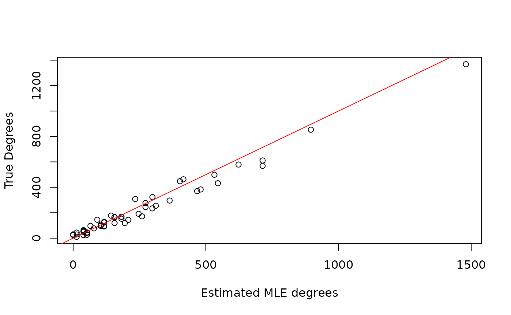
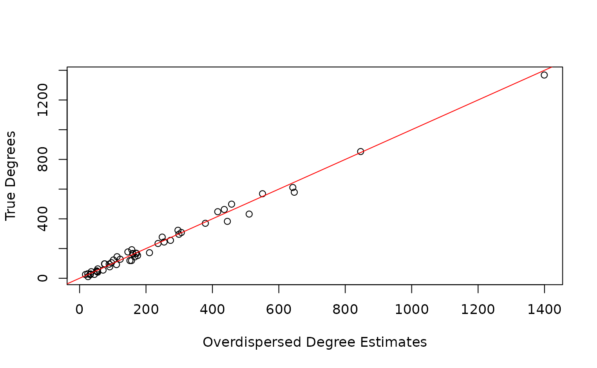
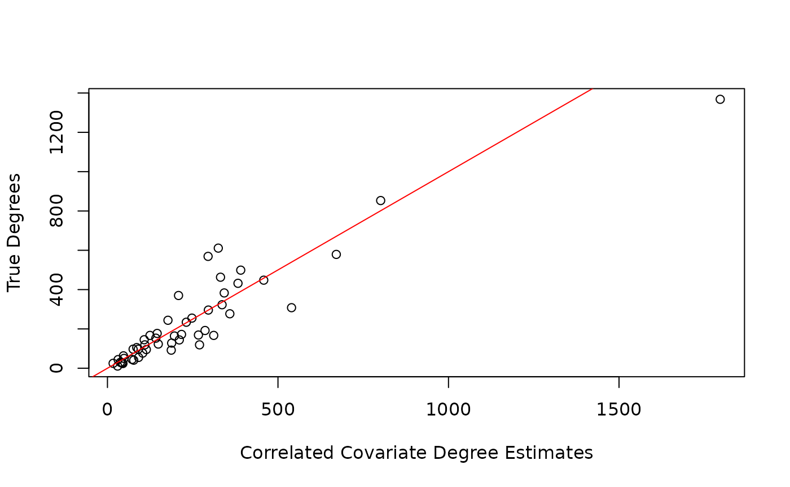

Fitting Network Scale-up Models
Source:vignettes/FittingNetworkScaleup.Rmd
FittingNetworkScaleup.RmdOverview
This packaged fits several different network scale-up models (NSUM) to Aggregated Relational Data (ARD). ARD represents survey responses about how many people each respondents knows in different subpopulations through “How many X’s do you know?” questions. Specifically, if respondents are asked how many people they know in subpopulations, then ARD is an by matrix, where the element represents how many people respondent reports knowing in subpopulation . NSUM leverages these responses to estimate the unknown size of hard-to-reach populations. See Laga, et al. (2021) for a more details.
In this package, we provide functions to estimate the size and accompanying parameters (e.g. degrees) from 4 papers:
- Killworth, P. D., Johnsen, E. C., McCarty, C., Shelley, G. A., and Bernard, H. R. (1998) plug-in MLE
- Killworth, P. D., McCarty, C., Bernard, H. R., Shelley, G. A., and Johnsen, E. C. (1998) MLE
- Zheng, T., Salganik, M. J., and Gelman, A. (2006) overdispersed model
- Laga, I., Bao, L., and Niu, X (2021) uncorrelated, correlated, and covariate models
This vignette introduces each model and shows how to fit all of these models on one data set.
Instructions
First, load the library:
We will simulate a data set from the Binomial formulation in Killworth, P. D., Johnsen, E. C., McCarty, C., Shelley, G. A., and Bernard, H. R. (1998).
set.seed(1998)
N_i <- 50
N_k <- 5
N <- 1e5
sizes <- rbinom(N_k, N, prob = runif(N_k, min = 0.01, max = 0.15))
degrees <- round(exp(rnorm(N_i, mean = 5, sd = 1)))
ard <- matrix(NA, nrow = N_i, ncol = N_k)
for (k in 1:N_k) {
ard[, k] <- rbinom(N_i, degrees, sizes[k] / N)
}
## Create some artificial covariates for use later
x <- matrix(sample(1:5, size = N_i * N_k, replace = T),
nrow = N_i,
ncol = N_k
)
z <- cbind(rbinom(N_i, 1, 0.3), rnorm(N_i), rnorm(N_i), rnorm(N_i))We should also prepare the data for modeling by scaling all covariates to have standard deviation 1 and mean 0. Additionally, we need to define which columns of belong to and .
PIMLE
The plug-in MLE estimator from Killworth, P. D., Johnsen, E. C., McCarty, C., Shelley, G. A., and Bernard, H. R. (1998) is a two-stage estimator that first estimates the degrees for each respondent by maximizing the following likelihood for each respondent: where is the number of subpopulations with known . For the second stage, the model plugs in the estimated into the equation and solves for the unknown for each respondent. These values are then averaged to obtain a single estimate of .
To summarize, stage 1 estimates by and then these estimates are used in stage 2 to estimate the unknown by
These estimates are obtained using the following call to the
killworth function.
pimle.est <- killworth(ard,
known_sizes = sizes[c(1, 2, 4)],
known_ind = c(1, 2, 4),
N = N, model = "PIMLE"
)
#> Warning in killworth(ard, known_sizes = sizes[c(1, 2, 4)], known_ind = c(1, :
#> Estimated a 0 degree for at least one respondent. Ignoring response for PIMLE
plot(degrees ~ pimle.est$degrees, xlab = "Estimated PIMLE degrees", ylab = "True Degrees")
abline(0, 1, col = "red")
round(data.frame(
true = sizes[c(3, 5)],
pimle = pimle.est$sizes
))
#> true pimle
#> 1 1817 1645
#> 2 14134 14632Note that the function provides a warning saying that at least one was 0. This occurs when a respondent does not report knowing anyone in the known subpopulations. This is an issue for the PIMLE since a 0 value is in the denominator for . Thus, we ignore the responses from respondents that correspond to .
MLE
Next, we analyze the data from the Killworth, P. D., McCarty, C., Bernard, H. R., Shelley, G. A., and Johnsen, E. C. (1998) MLE estimator. This is also a two-stage model, with an identical first stage, i.e. However, the second stage estimates by maximizing the Binomial likelihood with respect to , fixing at the estimated . Thus, the estimate for the unknown subpopulation size is given by
These estimates are also obtained using a single call to the
Killworth function.
mle.est <- killworth(ard,
known_sizes = sizes[c(1, 2, 4)],
known_ind = c(1, 2, 4),
N = N, model = "MLE"
)
plot(degrees ~ mle.est$degrees, xlab = "Estimated MLE degrees", ylab = "True Degrees")
abline(0, 1, col = "red")
round(data.frame(
true = sizes[c(3, 5)],
pimle = mle.est$sizes
))
#> true pimle
#> 1 1817 1526
#> 2 14134 12907Note that there is no warning here since the denominator depends on the summation of .
Bayesian Models
Now we introduce the two Bayesian estimators implemented in this package.
Overdispersed Model
The overdispersed model proposed in Zheng et al. (2006) assumes the following likelihood: Please see the original manuscript for more details on the model structure and priors.
This package fits this overdispersed model either via the
Gibbs-Metropolis algorithm provided in the original manuscript
(overdispersed) or via Stan
(overdispersedStan). We suggest using the Stan version
since convergence and effective sample sizes are more satisfactory in
the Stan implementation, and does not require tuning jumping scales for
Metropolis updates.
In order to identity the and as log-degrees and log-prevalences, respectively, the overdispersed model requires scaling the parameters. In order to scale the parameters, the user must supply at least one subpopulation with known size and the column index corresponding to that known size. Additionally, a two secondary groups may be supplied which can adjust for differences in gender or other binary group classifications. More details of the scaling procedure can be found in the original manuscript.
Below we fit both the overdispersed and overdispersedStan implementations to the ARD and compare estimates. Note that in practice, both warmup and iter should be set to higher values.
overdisp_gibbs_metrop_est <- overdispersed(
ard,
known_sizes = sizes[c(1, 2, 4)],
known_ind = c(1, 2, 4),
G1_ind = 1,
G2_ind = 2,
B2_ind = 4,
N = N,
warmup = 500,
iter = 1000,
verbose = TRUE,
init = "MLE"
)
#> Iteration: 100 / 1000 [10%]
#> Iteration: 200 / 1000 [20%]
#> Iteration: 300 / 1000 [30%]
#> Iteration: 400 / 1000 [40%]
#> Iteration: 500 / 1000 [50%]
#> Iteration: 600 / 1000 [60%]
#> Iteration: 700 / 1000 [70%]
#> Iteration: 800 / 1000 [80%]
#> Iteration: 900 / 1000 [90%]
#> Iteration: 1000 / 1000 [100%]
overdisp_stan <- overdispersedStan(
ard,
known_sizes = sizes[c(1, 2, 4)],
known_ind = c(1, 2, 4),
G1_ind = 1,
G2_ind = 2,
B2_ind = 4,
N = N,
chains = 2,
cores = 2,
warmup = 250,
iter = 500,
)
#> Warning: Bulk Effective Samples Size (ESS) is too low, indicating posterior means and medians may be unreliable.
#> Running the chains for more iterations may help. See
#> https://mc-stan.org/misc/warnings.html#bulk-ess
#> Warning: Tail Effective Samples Size (ESS) is too low, indicating posterior variances and tail quantiles may be unreliable.
#> Running the chains for more iterations may help. See
#> https://mc-stan.org/misc/warnings.html#tail-ess
round(data.frame(
true = sizes,
gibbs_est = colMeans(overdisp_gibbs_metrop_est$sizes),
stan_est = colMeans(overdisp_stan$sizes)
))
#> true gibbs_est stan_est
#> 1 1555 1569 1611
#> 2 4683 3596 5172
#> 3 1817 2062 1653
#> 4 1465 1099 1510
#> 5 14134 9142 13872
#> s
#> Chain 2: 1000 transitions using 10 leapfrog steps per transition would take 1.28 seconds.
#> Chain 2: Adjust your expectations accordingly!
#> Chain 2:
#> Chain 2:
#> Chain 2: Iteration: 1 / 500 [ 0%] (Warmup)
#> Chain 1: Iteration: 100 / 500 [ 20%] (Warmup)
#> Chain 2: Iteration: 100 / 500 [ 20%] (Warmup)
#> Chain 1: Iteration: 200 / 500 [ 40%] (Warmup)
#> Chain 2: Iteration: 200 / 500 [ 40%] (Warmup)
#> Chain 1: Iteration: 251 / 500 [ 50%] (Sampling)
#> Chain 2: Iteration: 251 / 500 [ 50%] (Sampling)
#> Chain 1: Iteration: 350 / 500 [ 70%] (Sampling)
#> Chain 2: Iteration: 350 / 500 [ 70%] (Sampling)
#> Chain 1: Iteration: 450 / 500 [ 90%] (Sampling)
#> Chain 1: Iteration: 500 / 500 [100%] (Sampling)
#> Chain 1:
#> Chain 1: Elapsed Time: 0.705 seconds (Warm-up)
#> Chain 1: 0.325 seconds (Sampling)
#> Chain 1: 1.03 seconds (Total)
#> Chain 1:
#> Chain 2: Iteration: 450 / 500 [ 90%] (Sampling)
#> Chain 2: Iteration: 500 / 500 [100%] (Sampling)
#> Chain 2:
#> Chain 2: Elapsed Time: 0.792 seconds (Warm-up)
#> Chain 2: 0.427 seconds (Sampling)
#> Chain 2: 1.219 seconds (Total)
#> Chain 2:
plot(degrees ~ colMeans(overdisp_stan$degrees), xlab = "Overdispersed Degree Estimates", ylab = "True Degrees")
abline(0, 1, col = "red")
Correlated Models
The correlated model proposed in Laga et al. (2022+) assumes the following likelihood where critically, i.e. the responses for each respondent are correlated across subpopulations. Again, and need to be scaled, and they can either be scaled using the same procedure as for the overdispersed model (providing indices corresponding to different groups), by using all known subpopulation sizes, or by weighting groups according to their correlation with other groups. More details about these scaling procedures are provided in Laga et al. (2022+).
In this package, model parameters are estimated via Stan. Note that
while the full model likelihood depends on
,
,
and
,
any combination of these covariates can be provided. Additionally, we
can assume that
is a diagonal matrix (i.e. no correlation) by setting the argument
model = uncorrelated in the correlatedStan
function.
correlated_cov_stan <- correlatedStan(
ard,
known_sizes = sizes[c(1, 2, 4)],
known_ind = c(1, 2, 4),
model = "correlated",
scaling = "weighted",
x = x,
z_subpop = z_subpop,
z_global = z_global,
N = N,
chains = 2,
cores = 2,
warmup = 250,
iter = 500,
)
#> Warning: The largest R-hat is NA, indicating chains have not mixed.
#> Running the chains for more iterations may help. See
#> https://mc-stan.org/misc/warnings.html#r-hat
#> Warning: Bulk Effective Samples Size (ESS) is too low, indicating posterior means and medians may be unreliable.
#> Running the chains for more iterations may help. See
#> https://mc-stan.org/misc/warnings.html#bulk-ess
#> Warning: Tail Effective Samples Size (ESS) is too low, indicating posterior variances and tail quantiles may be unreliable.
#> Running the chains for more iterations may help. See
#> https://mc-stan.org/misc/warnings.html#tail-ess
correlated_nocov_stan <- correlatedStan(
ard,
known_sizes = sizes[c(1, 2, 4)],
known_ind = c(1, 2, 4),
model = "correlated",
scaling = "all",
N = N,
chains = 2,
cores = 2,
warmup = 250,
iter = 500,
)
#> l)
#> Chain 2:
#> Warning: The largest R-hat is NA, indicating chains have not mixed.
#> Running the chains for more iterations may help. See
#> https://mc-stan.org/misc/warnings.html#r-hat
#> Warning: Bulk Effective Samples Size (ESS) is too low, indicating posterior means and medians may be unreliable.
#> Running the chains for more iterations may help. See
#> https://mc-stan.org/misc/warnings.html#bulk-ess
#> Warning: Tail Effective Samples Size (ESS) is too low, indicating posterior variances and tail quantiles may be unreliable.
#> Running the chains for more iterations may help. See
#> https://mc-stan.org/misc/warnings.html#tail-ess
uncorrelated_cov_stan <- correlatedStan(
ard,
known_sizes = sizes[c(1, 2, 4)],
known_ind = c(1, 2, 4),
model = "uncorrelated",
scaling = "all",
x = x,
z_subpop = z_subpop,
z_global = z_global,
N = N,
chains = 2,
cores = 2,
warmup = 250,
iter = 500,
)
#> Warning: The largest R-hat is 1.09, indicating chains have not mixed.
#> Running the chains for more iterations may help. See
#> https://mc-stan.org/misc/warnings.html#r-hat
#> Warning: Bulk Effective Samples Size (ESS) is too low, indicating posterior means and medians may be unreliable.
#> Running the chains for more iterations may help. See
#> https://mc-stan.org/misc/warnings.html#bulk-ess
#> Warning: Tail Effective Samples Size (ESS) is too low, indicating posterior variances and tail quantiles may be unreliable.
#> Running the chains for more iterations may help. See
#> https://mc-stan.org/misc/warnings.html#tail-ess
uncorrelated_x_stan <- correlatedStan(
ard,
known_sizes = sizes[c(1, 2, 4)],
known_ind = c(1, 2, 4),
model = "uncorrelated",
scaling = "all",
x = x,
N = N,
chains = 2,
cores = 2,
warmup = 250,
iter = 500,
)
#> (Sampling)
#> Chain 1: 2.948 seconds (Total)
#> Chain 1:
#> Chain 2: Iteration: 500 / 500 [100%] (Sampling)
#> Chain 2:
#> Chain 2: Elapsed Time: 2.167 seconds (Warm-up)
#> Chain 2: 0.803 seconds (Sampling)
#> Chain 2: 2.97 seconds (Total)
#> Chain 2:
#> Warning: Bulk Effective Samples Size (ESS) is too low, indicating posterior means and medians may be unreliable.
#> Running the chains for more iterations may help. See
#> https://mc-stan.org/misc/warnings.html#bulk-ess
#> Warning: Tail Effective Samples Size (ESS) is too low, indicating posterior variances and tail quantiles may be unreliable.
#> Running the chains for more iterations may help. See
#> https://mc-stan.org/misc/warnings.html#tail-ess
round(data.frame(
true = sizes,
corr_cov_est = colMeans(correlated_cov_stan$sizes),
corr_nocov_est = colMeans(correlated_nocov_stan$sizes),
uncorr_cov_est = colMeans(uncorrelated_cov_stan$sizes),
uncorr_x_est = colMeans(uncorrelated_x_stan$sizes)
))
plot(degrees ~ colMeans(correlated_cov_stan$degrees), xlab = "Correlated Covariate Degree Estimates", ylab = "True Degrees")
abline(0, 1, col = "red")